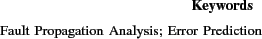

Next: Introduction
Fast, Approximate Error Prediction for Unreliable Embedded Processors
Abstract:
Reliability has emerged as an important design criterion due to shrinking device dimensions. To address this challenge, researchers have proposed techniques compromising the Quality-of-Service (QoS) across all design abstractions. Performing reliability-QoS trade-off from a high-level design abstraction is a major challenge. In this paper, we propose an analytical reliability evaluation framework, based on probabilistic error masking matrices (PeMMs). The reliability evaluation is performed by propagating erroneous tokens through an abstract circuit model. We report detailed experiments using a RISC processor and several embedded applications. The proposed approach demonstrates significantly faster reliability evaluation compared to pure simulation-driven approach.

Zheng Wang A Chattopadhyay
2014-07-16